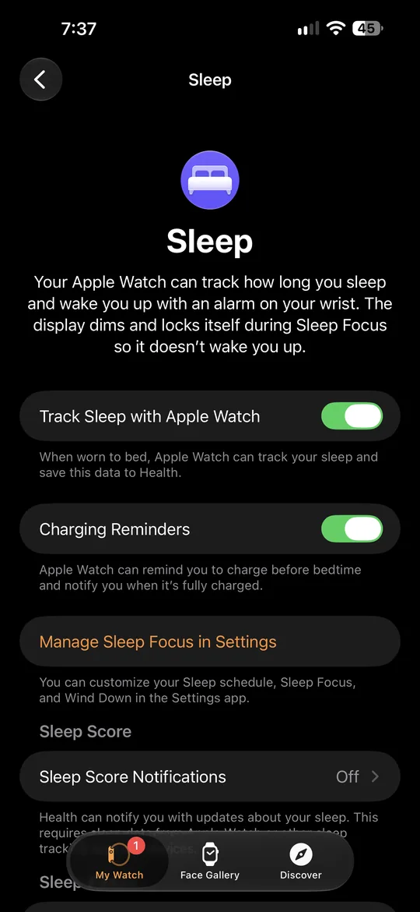
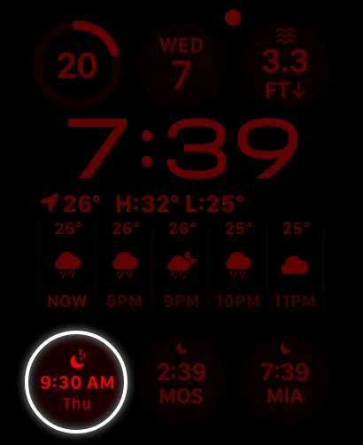

WhatchAlarm · Guia de uso
Configuração e guia de uso
O WhatchAlarm é um alarme inteligente que funciona no seu Apple Watch. Você define o horário mais tarde em que pode levantar e uma janela antes dele. Dentro dessa janela, o relógio procura um momento de sono mais leve — quando você já está se mexendo — e acorda você nessa hora. Se não encontrar, ele acorda você exatamente no horário definido.
O app do iPhone é o guia de configuração e o lugar da compra. O alarme em si vive inteiramente no relógio: seu iPhone pode ficar em outro cômodo, ou desligado.
As capturas mostram a versão em inglês do app; no texto, os botões aparecem com o nome em português.
Do que você precisa
- Apple Watch com watchOS 10 ou posterior
- iPhone com iOS 17 ou posterior, emparelhado com o relógio
- Uns cinco minutos para a configuração abaixo
Faça uma vez só, no fim do dia, antes da sua primeira noite.
Configuração em cinco passos
Os passos 1, 3 e 4 são no iPhone; o passo 2, no relógio. Cada um é feito uma única vez.
Instale o app no relógio
O iOS nem sempre instala sozinho os apps do relógio. No seu iPhone:
- App Watch
- Meu Relógio
- Geral
- role para baixo
- Apps Disponíveis
- WhatchAlarm
- Instalar
Dica: nessa mesma tela Geral, ative Instalação Automática de Apps para que os próximos apps do relógio se instalem sozinhos.

Permita o acesso no relógio
Abra o WhatchAlarm no seu Apple Watch. Na primeira vez, ele pede três permissões — permita as três:
Esses pedidos aparecem no relógio, não no iPhone, porque o alarme funciona no relógio. Sem eles, ele ainda acorda você no horário definido, mas não consegue procurar um momento mais leve.
Libere o WhatchAlarm no Foco Sono
Este passo é importante: sem ele, o Foco Sono pode segurar seu alarme. No seu iPhone:
- Ajustes
- Foco
- Sono
- Apps
- em Permitir Notificações
- adicione o WhatchAlarm


Ative o rastreamento do sono
Assim o relógio mede sua frequência cardíaca com mais frequência à noite. No seu iPhone:
- App Watch
- Meu Relógio
- Apps
- Sono
- Rastrear Sono com o Apple Watch
A linha Apps fica perto do fim da lista Meu Relógio. Se você já vê seus dados no app Sono do relógio, está ativado e não há nada a fazer.

Durma com o relógio
Durante a noite, o relógio capta seus movimentos e sua frequência cardíaca — os sinais que o WhatchAlarm usa para diferenciar o sono leve do profundo. Confira se ele está carregado antes de dormir.
Definir um alarme
Para uma manhã


- Abra o WhatchAlarm no relógio e gire a Digital Crown para escolher o horário-limite para acordar.
- Toque em Janela para escolher quanto tempo antes ele pode acordar você: 10, 15, 20 ou 30 minutos. 20 minutos é um bom começo.
- Som — deixe ativado se quiser som no fim (veja Como ele acorda você).
- Toque em Iniciar. A tela mostra Alarme definido, o dia, o horário e a janela.
Para cancelar antes de tocar:
- Gerenciar
- Parar alarme
Toda semana: uma agenda
No relógio, toque em Agenda na parte de baixo da tela principal. Ative os dias que quiser, cada um com seu próprio horário. Em um dia útil, Usar em Seg.–Sex. copia esse horário para os cinco dias úteis.
Um alarme agendado toca sozinho nesses dias. Para pular uma única manhã, abra o WhatchAlarm quando esse alarme estiver definido e toque em Gerenciar → Pular este alarme; a agenda continua ativa.
A parte inteligente precisa de um toque por dia
A Apple só deixa um app de relógio preparar sua sessão noturna enquanto o app está aberto na tela, e com no máximo cerca de um dia e meio de antecedência. Por isso:
- O alarme em si sempre toca — ele é definido com dias de antecedência.
- A parte inteligente (procurar um momento mais leve) liga sempre que você abre o WhatchAlarm no dia anterior ao alarme. Parar o alarme da manhã no relógio também conta, então na maioria dos dias você não precisa fazer nada.
- Se algum dia escapar, um lembrete à noite pede que você toque nele. Tocar abre o app, e isso basta. Escolha um horário em que o relógio esteja no pulso, não no carregador:
- Ajustes
- Lembrete à noite
Como ele acorda você
Suave quando pode, firme quando precisa. O que você recebe depende de o relógio ter encontrado ou não um momento mais leve.
Momento mais leve encontrado
Despertar antecipado: com suavidade
Você já está quase acordando, então ele começa com toques no pulso que aumentam ao longo de três minutos. Ainda dormindo? A vibração sobe até a intensidade escolhida em Ajustes → Intensidade ao acordar (Suave, Normal ou Forte). Sem som nesta fase.
Se você ainda não tiver parado o alarme quando chegar o horário definido, ele passa para o despertar com força total.
Horário definido atingido
Horário-limite: força total
Sem aquecimento — o tempo acabou. A vibração mais forte do relógio, sem pausas, desde o primeiro segundo. Dois minutos depois o som entra junto, e continua até você parar.
Quando ele já começa com som
O relógio só pode vibrar para o WhatchAlarm enquanto a sessão noturna do app está ativa, e a Apple limita essa sessão a cerca de 30 minutos. Com uma janela de 30 minutos, a sessão inteira é usada para procurar sono leve e termina bem no horário definido; depois disso o app só consegue acordar você com notificações, e por isso o som começa na hora. O mesmo acontece se você não abriu o WhatchAlarm no relógio no dia anterior ao alarme: aí não há sessão noturna.
Para ter vibração primeiro, mantenha a janela em 20 minutos ou menos.
Som e Modo Silencioso
Para ter som, são precisas duas coisas: Som ativado no WhatchAlarm e o relógio fora do Modo Silencioso (o sino na Central de Controle do relógio). No Modo Silencioso, o Apple Watch não deixa nenhum app tocar som — nem o alarme da própria Apple —, então o WhatchAlarm acorda você só com vibração.
Como parar
Toque em Parar no WhatchAlarm ou toque na notificação do alarme.
Seu próximo alarme no mostrador
Adicione a complicação do WhatchAlarm para ver seu próximo alarme de relance. Mantenha o dedo no mostrador e depois:
- Editar
- escolha um espaço
- WhatchAlarm
- Próximo alarme
Ela mostra o horário e o dia do seu próximo alarme. Sem alarme definido, mostra Não. Nos espaços maiores, também diz se a parte inteligente está ligada; Toque para ativar significa que ainda não — um toque abre o WhatchAlarm e liga.


Ajustes no relógio
- WhatchAlarm
- Ajustes
- Formato de hora
- Automático, 12 horas ou 24 horas.
- Intensidade ao acordar
- Com que firmeza um despertar antecipado continua depois dos primeiros toques: Suave, Normal ou Forte. No horário definido, ele sempre acorda você com força total.
- Lembrete à noite
- Ligado ou desligado, e o horário.
- Diagnóstico
- Um registro do que o alarme fez e por quê. Fica no relógio, a menos que você mesmo toque em Enviar registro — útil se nos contatar por algum problema.
Histórico, na tela principal, mostra suas duas últimas semanas: quando ele acordou você e se foi antes (movimento ou frequência cardíaca) ou no horário definido.
Teste grátis e compra
O WhatchAlarm é grátis por 14 dias, com tudo incluído. Depois, uma única compra o desbloqueia para sempre — não é assinatura, nada se renova.
Compre quando quiser no app do iPhone:
- Guia de configuração e ajustes
- Compra
Já comprou antes, em um telefone novo ou depois de reinstalar? Toque em Já comprou? Restaurar compra. O app sempre informa o resultado:
- Compra restaurada — o app está desbloqueado.
- Nenhuma compra encontrada — a conta da App Store neste iPhone não comprou o WhatchAlarm. Entre com o ID Apple usado na compra (Ajustes → seu nome → Mídia e Compras) e tente de novo.
- Não foi possível restaurar — a App Store não respondeu. Verifique sua conexão e tente de novo.

O alarme não acorda você?
Verifique nesta ordem.
- O WhatchAlarm está permitido em Ajustes → Foco → Sono → Apps (passo 3).
- O relógio estava no pulso e carregado.
- O alarme estava definido (Iniciar) ou agendado no relógio.
- O acesso foi permitido no próprio relógio (passo 2).
- Sem som? Provavelmente o relógio está no Modo Silencioso — é o esperado, ele acorda você com vibração.
Privacidade
O WhatchAlarm não tem conta, servidores, análises nem anúncios. Sua frequência cardíaca e seus movimentos são lidos no relógio, usados no relógio e nunca saem dele.
Política completa: Política de Privacidade. Dúvidas: contact@nghive.app